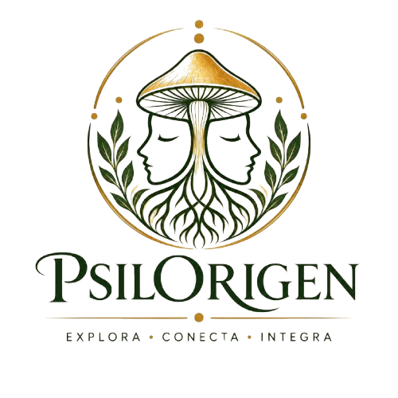

EXPLORA. CONECTA. INTEGRA.
Quiénes Somos
Un espacio sagrado de encuentro, introspección y sanación.

Nuestra Historia
PsilOrigen nace de la necesidad de reconectar al ser humano con su esencia más profunda. Creemos que cada persona merece un espacio seguro donde pueda detenerse, respirar y escuchar su voz interior.
Nuestra Filosofía
Entendemos que el crecimiento no es lineal. Es un ciclo constante de explorar, conectar e integrar.
Explora: Te invitamos a mirar hacia adentro.
Conecta: Acompañamos el proceso de reconexión.
Integra: Te ayudamos a llevar lo aprendido a tu vida diaria.